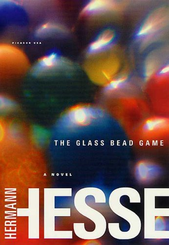

The Glass Bead Game

by Hermann Hesse (1943). Translated from German to English with evident
devotion and expertise by Clara Winston & Richard Winston. 
This novel is described by some as the culmination of Hesse's career, for which he received a Nobel Prize for Literature. Many reviews on Goodreads cite it as a life-changing novel, or as a singular all-time favorite book.
I must confess with some sadness that I must have entirely missed the point. I have not enjoyed it at all. The number of books I failed to finish in my life is surely less than five, and this very nearly became one of them.
The first half describes Knecht's education and career within the rarefied academic atmosphere of some distant future European state's "pedagogical province", wherein (exclusively male) scholars devote their time to mastery of the titular game. This relies upon drawing deep relationships between all fields of human study, such as music and biology.
Knecht is talented and likeable, and rises effortlessly through the ranks, without exhibiting any real volition of his own, other than being naturally predisposed to study, and having an instinct for drawing out the best in people. He is ultimately assigned to the highest office in the land, without encountering any substantive antagonist or difficulty along the way.
The mechanics of the game itself, about which all this ostensibly revolves, is deliberately never explained, other than poetic references to glass beads being used to exquisitely interrelate insights or concepts from multiple fields of study.
This first half of the book bored me to absolute tears. If I had to find a single word to describe Knecht, despite his diligence, it would be "inactive".
At the halfway point through the book, this serenity is interrupted by Knecht making the controversial decision to quit, not just from his exalted post, but from the whole system over which it rules. He leaves the insular academic province entirely, to begin a new life, subject to more real-world constraints. Just at this very moment, as the narrative becomes interesting, this section abruptly ends in a very unexpected manner.
Out of the whole book, this moment resonates with me. Knecht has spent a life devoted to scholarly thought, but after many decades he throws off the expectations of that life to forge his own path. Mere days after that decision, a moment of physical exertion proves to be his sudden undoing.
Does this show that Knecht should have more highly valued the protections from the physical world that his intellectual castle provided? That someone raised in such a cosseted environment was unsuitable to face the rigors of the real world? Or should I instead observe that, despite his ostensible success and satisfaction with life, in waiting so long before daring to strike out on his own, and then find days later that his time was up, Knecht has in some ways wasted his life doing something other than what he really wanted to do?
Neither of these seem particularly compelling to me, nor sufficient for the larger themes that I suspect the book might actually be grappling with.
The second half of the book contains various poems, written by Knecht when he was younger, containing premonitions of his aspirations and his doubts. It ends with three short tales, each describing an alternate life that Knecht might have lived in other times. Apparently early drafts had these tales being literal other lives Knecht was reincarnated into. But in the published book, they are presented without context, and I think it is only by consensus that they are commonly understood to be grouped with the earlier poems as examples of Knecht's writing - his imagination of other lives he might have lived.
I did not understand the relevance of these tales to the larger portion of the book, other than the way they forcefully contrast with it, by immersing Knecht in emotional and painful tales of life embedded within a wider society, rather than abstractly observing its achievements from without. As such, they force him into action, and to me they are more engaging for it.
Wikipedia informs me that each of the four tales of Knecht's life focuses on a different basic aspect of analytical psychology: thinking (Magister Ludi), sensation (The Rainmaker), intuition (Indian life) and feeling (The Father Confessor). Similarly, several of the book's characters who had influence on Knecht are thinly-veiled references to real world people, some famous such as Friedrich Nietzsche, others being acquaintances of the author.
All of which seems reasonable, but doesn't really help me understand what I just read. Perhaps each tale of Knecht, in focussing on one human trait, is lacking because it undervalues the other three. Perhaps. ¯\(ツ)/¯